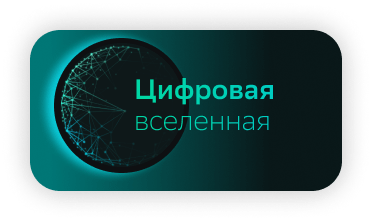
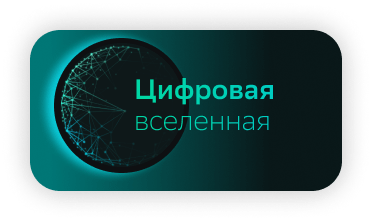

Sber Science 2021
Historically, the Russian scientific school has been considered one of the strongest in the world. At Sber, we gather the best minds to focus on the scientific and technical areas that are strategically important to us. We also cooperate closely with leading Russian institutions and research centres. The synergy between academia and business community creates a good background for technological disruption. In order to support scientists, we have also established annual Sber Science Award.

Science and Business
Now, Sber is more than just a bank; it is also a major hi-tech company with a strong R&D capabilities. Our research and development results are the base for our competitiveness. Whether we are improving the efficiency of our own business processes, launching new products for retail or corporate clients, or developing solutions to transform entire sectors of the economy, our every step builds on achievements made by thousands of engineers and scientists of our laboratories and research centres, as well as our partners at leading universities and research institutions. And I am sincerely grateful to all of them!
In 2021, Global Finance named Sber the World’s Best Digital Retail Bank. Our clients do not (and should not) know the names of those whose work supports these digital services, the world’s best. However, we know them all, and are proud of every one.
In 2021, Sber scientists and developers received more than 90 invention patents, published and submitted for publication 77 academic papers (in leading global journals and at international A/A* level conferences), and received various awards. At the end of the year, they also won an international competition held at NeurIPS, the world’s largest conference, by showing the best results in training neural networks to solve the most complicated real-world problems.
I have no doubt that with such a team, and with the spirit of ongoing scientific research and creative freedom that reigns at Sberbank, we can meet any challenge. I believe that in 2022 we will witness new achievements by our scientists, as well as more pioneering publications and inventions, and breakthrough ideas introduced via Sber’s technologies and products.
Alexander Vedyakhin
First Deputy Chairman of the Executive Board of Sberbank
Sber’s Key Research
Partners


Science at Sber

Today, Sber is a leading hi-tech company. It has researchers and engineers on board, who provides our platforms, products, and services with a competitive advantage. The results of developments are well known, generating real value for clients and improving the performance of Sber and its subsidiaries. The results are patentprotected and have won both national and international awards. Our open-source products are more and more idely used by developer communities all over the world.
However, we can look beyond the horizon too! Our research allows us to better understand the challenges and opportunities our teams will face in the future.
Research is being conducted and innovations are being introduced across the Sber group, and our R&D teams include the best of the best researchers. The practical results of their activity often feature a significant degree of genuine scientific novelty. Therefore, our colleagues’ articles are regularly published in leading international scientific journals. We are actively expanding one of the Sber’s most important assets: its intellectual property. By December 2021 our engineers had obtained 226 patents, and that number is constantly growing. Rospatent awarded five of our inventions as the best inventions of the year in Russia. In 2021, our researchers published (and submitted for publication) over 70 academic papers in leading peer-reviewed scientific journals in Russia and abroad.
Our research and innovations are carried out both by our own teams and by joining forces with leading universities, research centres, and technology partners around the world. Research performed jointly by Sber and universities expands our ability to create technological competitive advantage: together we achieve better results more quickly. This year, we launched new joint research activities with the Russian Quantum Center, Skoltech, HSE, MIPT, MIEM, MSU, MISIS, RES, and the Russian Academy of Sciences Institutes of Oceanology, Geography, and Computational Mathematics.
About a year ago, we started considering the next step in supporting the fundamental research which is painfully needed, in order to build a national competitive advantage. This effort resulted in the launch of the Sber Science Award. In March 2022 we will announce the winners of all Award’s three categories: Physical Sciences, the Digital Universe, and Life Sciences.
When you are regularly in touch with leading scientists and practitioners, you understand that world of science and corporations are changing right before our eyes. The distance between fundamental scientific discoveries and practical results that enable new products and new competitiveness is shrinking. Today’s science becomes tomorrow’s technology; the day after tomorrow, this technology becomes a product.
The world has become significantly more complex. Sber’s place in this world of ‘new complexity’ is determined by its 180-year history, inextricably associated with the development of the Russian economy, and the new challenges being faced by major technology companies. Corporate developments are the key to tomorrow’s competitiveness, and research drives our ability to survive. Sber researchers make a significant contribution to this work.
In this digest we present fundamental information on papers published by Sber researchers, discuss the Science Award and the results of predictive research, and introduce our key scientific partners.
We believe that the new Science at Sber 2021 collection will prove to be an interesting and useful read!
Albert Yefimov
PhD., Vice President,Director,
Sber Innovation & Research,Sberbank
Read more
Sber Science Award
On 14 September 2021, Sber announced the launch of its Award in Science and Technology. Today, it is extremely important to support the scientific audacity of visionary scientists, who are carrying out advanced fundamental research and laying the groundwork to create future technologies. The launch of the Science Award was a inevitable step for Sber. The Award has three categories.
Read about the Award 

Projects Implemented Jointly
In 2021, Sber’s Internet of Things Laboratory and Moscow Institute of Electronics and Mathematics (part of Higher School of Economics) jointly explored the technical features and capacities of various wireless connection protocols (both ground- and satellite-based), and created an experimental unit to identify possibilities for using cutting-edge telecommunication technologies to drive Sber’s high-potential projects.

Jointly with the Russian Quantum Center, Sber Innovation & Research develops methodologies to evaluate the impact of quantum technologies on the business activity of hi-tech and financial companies. The massive introduction of quantum calculations in business will not happen today or tomorrow, although the consequences may turn out to be so drastic that the best time to prepare for the ‘quantum revolution’ is now.

Skoltech and Sber cooperate now in many areas. We have already elaborated a system for the analytical recovery of non-obvious connections between Sber’s clients. The results of this work are used to refine the credit scoring model and to identify fraud. An anomaly prediction system for servers has been developed. In addition, we have created a model to predict server load in highintensity periods, in order to optimise the server capacity growth strategy. We carry out works aimed at predicting the degradation of machine learning models over time, based on historical validation data. In 2021, we launched a project to develop promising power elements; that is, batteries for micro-electronic devices.
AI Research Centres
In early November 2021, Sber became the industrial partner of three artificial intelligence research centres. In collaboration with leading national university teams, research is planned until the end of 2024, and its results will be implemented in Sber’s technologies and products.
Thanks to Sber’s support as an industrial partner, three leading Russian universities received about RUB 2.7 billion of additional state subsidies from Federal Government within a program for the development of highpotential AI-driven projects.
«When scientific research and development are closely intertwined with business objectives, it always leads either to the creation of disruptive technologies, or to the resolution of pressing problems. I would like to note a number of important future vectors, one of which is Metaverse. The idea of Metaverse is to make the digital world as close as possible to real life, to get more of a tactile feel. This requires efforts of many people to be joint, but there is no doubt that it will happen.
At Sber, science and applied technologies have been developing intensively in recent years, and I think that Sber will be able to significantly expand its position at the forefront of scientific and applied research.»

A Glimpse into the Future
Vision 2035
Studying and predicting the future is an ambitious research task. Technological giants do it to identify promising areas for investment, to take note of advanced R&D topics, and (of course) to proactively build a preferred version of future, where we would all like to live and work.
In 2021, we conducted a number of studies to forecast the future:
changes in the social and economic order, new products, and disruptive innovations and technologies. We put particular emphasis on areas that could lead to technological disruption and principal changes to the ‘rules of the game’ and distribution of forces in the market. This will become possible due to original developments and business models that are technically and organisationally unavailable today, but which would be real in 2035.
The Vision 2035 research report gives an idea of how each of us will live, and what each of us will do. It also tells about new practices in education, transport, communications, and our daily routines. Using various combinations of well-established and already known tendencies (including digitization, robotization, and virtualization) and emerging enhancements, such as seamless virtual and augmented spaces and flying cars, we showed what would happen on three levels:
Scientific and Technological Disruptions
The survey study Scientific and Technological Disruptions was conducted to build up Sber’s long-term strategy and ecosystem shaping. In the future, a few tens of key technologies will create a very new technological paradigm, and enable changes in the majority of industries and lifestyle that we are used to. We discussed ‘cutting-edge’ research carried out within 7 basic spheres (energy, infrastructure, telecommunications, materials, computation, biotechnologies, and interfaces). How will the industrial ‘thermonuke’ change force distribution in the global economy? Will our offices and living rooms relinquish electric sockets? Will a super computer fit into a smartphone, and will the smartphone be able to connect directly to satellites? Can DNA molecules store data? What will an augmented human body look like, and will it need gadgets to enter virtual and augmented reality?
In 2022, we will definitely continue our effort to integrate scientific and technological forecasting into a corporate context, and to expandrelated ‘visibile areas.’

The Metaverse —
Metaverse fits perfectly into the modern technological context. On the one hand, a transition to the super high-speed 5G/6G mobile communications raises a need for a killer application, which provides demand on network capacities run at speeds of terrabits per second, rather than megabits or gigabits. Metaverse is the ideal candidate for this role.
On the other hand, the newly created world will be driven by exponential growth of computing capacities, miniaturization of electronics, new artificial intelligence capabilities, graphic accelerators for 3D rendering, mio- and neuro-computer interfaces, and blockchain technology.
Over time, AI-generated content will also decrease Metaverse building costs radically. The Metaverse will create opportunities for new businesses related to development online content, and consequently, for the transfer of ‘demonstrative super-consumption’into virtual worlds.
However, the Metaverse is not a simple infrastructural system, which can be ‘designed’, ‘ordered’, or ‘deployed’. The practical implementation of a particular concept for a comprehensive Metaverse will require a significant amount of R&D in the fields of multi-user platforms, virtual reality, user interfaces, and sensors.
We believe that practical efforts to create the Metaverse - or a number of ‘meta galaxies’ — will start, once corporations and governments formulate the answersto a number of key questions:
Will the unified Metaverse be developed on the basis of an open multilateral agreement, or will there be separate corporate ‘galaxies’ connected by portals (as, for example, in Omniverse by NVIDIA)?
Will there be a standardization consortium similar to W3C, or will individual galaxies be integrated into the Metaverse through a ‘battle of standards’ (e.g. Microsoft Teams-Meta Facebook alliance vs NVIDIA Omniverse…)?
What is the role of the governments in potential transfer of individuals’ activities in the Metaverse, and how will this role be exercised in practice?
At which level of VR credibility will corporations launch the Metaverse 1.0 project, which is open for users to join (right now, after the massive introduction of AR glasses, or when interfaces providing even deeper immersion are ready)?
We will continue studying the concept of the future Metaverse, and the role of Russian players in combining the virtual and real worlds emerging before our eyes.
Sber-Cosmos-Sber
Sber researchers proposed metrics to evaluate promising space-related projects and technological innovations. Our metrics are based on the following criteria:
Applicability to current business, and evaluation of the impact of particular space communication channels or geoinformation data on the efficiency of current and future business tasks.
Creation of new businesses within the Sber ecosystem, based on space solutions.
Impact on Russia’s economy and innovation development.
Attractiveness of new projects and ideas for investment.
This model allows us to build an efficient system to evaluate projects and potential partnerships.
In 2021, we began developing a distributed competency network, which will focus on analysing possibilities and formats for using space technologies to solve practical business problems. A meeting of Sber executives and Roscosmos’ leadearship took place in spring 2021, and both sides confirmed the interest in joint space projects. Sber Innovation & Research cooperates with all the interested business lines and business blocks of Sber and its ecosystem, in order to explore ‘space opportunities’ for our business.
Quantum Perspective
In 2021, we launched a joint project with the Russian Quantum Center, focussed on the development of a methodology to evaluate ‘quantum impact’ on business, as well as on business sustainability and competitiveness. Now, quantum computers are the only known technology which can enable the exponential acceleration of future computations, compared to modern classic supercomputers. Quantum encryption and communications, in turn, can make data storage and exchange processes practically invulnerable to hacking.
Next year we are planning to complete the development of a methodology to determine the impact of quantum technologies on the business of large, diversified companies.
Quantum SeminarCompetition Wins
In late 2021, the bank’s teams won two international competitions, which took place at NeurIPS, the world’s largest conference on neural computation and machine learning.
The comparison of solutions suggested by the competitors was made using a dataset of 1,600 hours of traffic on roads in Russia, Israel and the US, in fine weather, snow, and rain. Basing on this data, teams evaluated to what extent ML models are able to tackle unknow road situations. The competition participants trained their algorithms on the data provided, then checked their performance against new data. The work carried out by the team is important for the development of selfdriven motor vehicles, and the possibility of applying the developed algorithms is already being elaborated, together with SberAutoTech company.
Read moreThe neural networks trained by the team showed the best performance for passing through NetHack. This is the world of Labyrinth, where the player fights against various beings, trades, develops, and tries to capture a magic talisman. The game is considered to be one of the most difficult ones for artificial intelligence, due to numerous event development options and the strategy not being known in advance. For example, a long time has passed since machine learning models mastered chess, Dota 2, and Starcraft. Progress in resolving such tasks will lead to new achievements in autonomous transport and robotised delivery spheres, as well is as in the field of user interface testing automation.
Read more
Academic Publications of 2021
The papers published in 2021 mirror the key scientific achievements of Sber’s researchers. It is hard to single out one article, but it should be noted that Sber researchers participate and publish in the collection of proceedings for the most highly quoted world conferences on artificial intelligence and robotics.
Articles and reports by leading SberDevices scientists are dedicated to various computer linguistics problems, as well as the specificity of working with the Russian SuperGLUE 1.1 benchmark and ruGPT-3 XL language model, which gained popularity last year.
The papers published in 2021 mirror the key scientific achievements of Sber’s researchers. It is hard to single out one article, but it should be noted that Sber researchers participate and publish in the collection of proceedings for the most highly quoted world conferences on artificial intelligence and robotics. Articles and reports by leading SberDevices scientists are dedicated to various computer linguistics problems, as well as the specificity of working with the Russian SuperGLUE 1.1 benchmark and ruGPT-3 XL language model, which gained popularity last year. A range of papers written jointly by SberDevices researchers and the Artificial Intelligence Laboratory describe our contribution to the fight against the COVID-19 pandemic, and the problems of AI application in other medical areas, including analysing the effectiveness of drugs and the results of various instrumental examinations. Publications on human-machine interfaces are intended to help people with limited physical abilities, and to contribute to emerging of future neural interfaces. Our work helps to create next generation devices, which will be distinguished by a higher reliability regarding the recognition of electrical signals emitted by the human brain.
Seven leading A/A* level conferences graded by CORE accepted papers by Sber researchers
- Knowledge Discovery and Data Mining Virtual Conference 2021
- European Association of Computational Linguistics (EACL)
- 15th ACM Conference on Recommender Systems
- 2021 IEEE/RSJ International Conference on Intelligent Robots and Systems (IROS 2021)
- IEEE/CVF International Conference on Computer Vision (ICCV)
- 2021 Conference on Empirical Methods in Natural Language Processing (EMNLP)
- 35th Conference on Neural Information Processing Systems (NeurIPS)
In its papers, the Robotics Center described new methods of artificial intelligence application in computer vision for robots, for both indoor and outdoor activities. Sber AI presented new methods for designing and streamlining the application of neural networks, as well as new approaches to recognising handwritten text and Earth images taken from space.
In addition to summarising the work carried out throughout the year, the scientific papers by Sber researchers also lay foundations for the future application of the results obtained, both in business and in socially important fields – primarily, healthcare and humanitarian studies.
This collection includes the most important academic papers, many of which were prepared by Sber employees in co-authorship with partner researchers from leading Russian universities and research institiutions. A notable portion of these papers were published or accepted for publication in journals with the highest Q1 category, or reported at A/A*-level conferences, whereas others found their audiences via Russian scientific and or narrowly specialised international editions.
This section contains bibliographic data and abstracts of papers published in 2021, as well as photos of Sber’s contributors. For the final (Work Goes On) section, we have summarised details on papers being published in early 2022, in order to give the reader an idea of current areas of research being carried out by Sber.
The Work Goes On
In 2021, Sber researchers prepared and presented articles and reports for the world's leading scientific journals and conferences. Their brief overview gives an idea of the most relevant areas of work of our teams.
- Additive Regularization Scheduler for Neural Architecture Research / Mark Potanin, Kirill Vayser, Vadim Strijov (submitted)
- Blending of Predictions Boosts Multimodal Ads Understanding / Anton Alekseev, Andrey Savchenko, Sejeong Kwon, Elena Tutubalina, Evgeniy Miasnikov, Andrei Kuznecov, Ilya Shenbin, Sergey Nikolenko // (submitted)
- Brain Commands Recognition with Semantic Load Maximization with Graph Algorithm /Aleksandr Mazurin, Aleksey Galatenko, Alexandra Bernadotte // Journal of Computer Science.ISSN: 1552-6607 ((under review by journal)
- Comparison of Modern Open-source Visual SLAM Аpproaches / Dinar Sharafutdinov, Mark Griguletskii, Pavel Kopanev, Mikhail Kurenkov, Gonzalo Ferrer, Aleksey Burkov, Aleksei Gonnochenko, Dzmitry Tsetserukou // [site] [2021] URL: https://arxiv.org/abs/2108.01654
- Continuous Learning of Humanoid Robots: Object Detection Using External Random Memory / Ivan Nenakhov, Ruslan Mazhitov, Kirill Artemov, Seyed Hassan Zabihifar, Aleksandr Semochkin, Sergey Kolyubin // IEEE Xplore (under review by journal)
- COVID-19 Connected EEG-Patterns / Aleksandr Zubov, Marina Isaeva, Ivan Menshikov, Alexandra Bernadotte // Neuroscience International, Special Issue on Neuroinflammation and COVID-19. ISSN: 2524-2245 ((under review)
- Cross-Domain Limitations of Neural Models on Biomedical Relation Classification / Ilseyar Alimova, Elena Tutubalina, Sergey Nikolenko // (under review by journal)
- DetIE: Multilingual Open Information Extraction Inspired by Object Detection / MichaelVasilkovsky, Anton Alekseev, Valentin Malykh, Ilya Shenbin, Elena Tutubalina, Dmirtiy Salikhov, Mikhail Stepanov, Andrey Chertok, Sergey Nikolenko // (under review by journal)
- DNN-Based Indoor Metric-Semantic Mapping for Autonomous Robots / Amiran Berkaev, Malik Mohrat, Alexey Burkov, Sergey Kolyubin // IEEE International Conference on Robotics and Automation 2022 (under review)
- Empowering BT5.1 Location Capabilities: from Theory to Practice / Irina Bessonova, Ekaterina Naumova, Ali Ajad, Aleksandr Novikov, Svyatoslav Yakimenko, Evgeniy Kucheryaviy, Andrey Tsislav, Yuriy Litvak // (submitted)
- Fast and Memory-Efficient Planning in C-space: Modified Bi-directional RRT* Algorithm for Humanoid Robots / Ilya Dovgopolik, Kirill Artemov, Seyed Hassan Zabihifar, Aleksandr Semochkin, Sergey Kolyubin // IEEE Xplore (under review)
- Feasibility Study of LEO for Support of Advanced 5G-Grade Services / Vladimir Bychkov, Evgeniy Kucheryaviy, Natalia Seltsova, Andrey Tsislav // (submitted)
- Fulfilling ESG Expectations for AI/ML Aided NB-IoT Services / Ksenia Lyakhova, Ksenia Glinkina, Svyatoslav Yakimenko, Evgeniy Kucheryaviy, Natalia Seltsova, Andrey Tsislav, Yuriy Litvak // (submitted)
- Medical Crossing: A Cross-lingual Evaluation of Clinical Entity Linking / Anton Alekseev, Zulfat Miftahutdinov, Elena Tutubalina, Artem Shelmanov, Vladimir Ivanov, Vladimir Kokh, Alexander Nesterov, Manvel Avetisyan, Andery Chertok, Sergey Nikolenko // (submitted)
- Multimodal Model with Text and Drug Embeddings for Adverse Drug Reaction Classification / Andery Sakhovskiy, Elena Tutubalina // (submitted)
- The Multivariate Inhomogeneity Detection with Scan Statistics Based on the KullbackLeibler Divergence Estimates / Denis Dimitrov // (submitted)
- The Three Cultures and Scientific Diversity / Ivan Menshikov, Aleksandr Zubov, Marina Isaeva, Alexandra Bernadotte // Neuron. ISSN 1097-4199 (under review by journal)
- Towards Robust and Accurate SLAM for Wheeled Robots in Dynamic / Long Vuong Ha, Jaafar Mahmoud, Aleksey Burkov, Sergey Kolyubin // IEEE International Conference on Robotics and Automation 2022 (under review by journal)
- XtremeAugment: Getting the Most from Your Data by Combining Image Collection with Image Augmentation / Sergey Nesteruk, Svetlana Illarionova, Timur Akhtyamov, Dmiry Shadrin, Maria Pukalchik, Andery Somov // IEEE Access (under review by journal)
- Надежный источник времени в распределенных системах на примере Hyperledger Fabric / А.И. Филиппов, В. А. Попов, О.В. Абдрашитов, А. Баргер // (under review by journal)
- Is There the Brain New World? / Alexandra Bernadotte // Science Robotics. ISSN 2470-9476 (invited paper submitted)
An Engineer’s DNA
Sber’s scientific and technical achievements are enabled by the creative and humble work of our team. Not only do Sber researchers already possess vast knowledge in their respective fields; they continue to extend that knowledge. We see curiosity, love of learning, and inquisitiveness as the essence of what it means to be an engineer. I am pleased to introduce to the readers the DNA of a Sber Engineer, a kind of genetic code that determines our culture.
Go to website